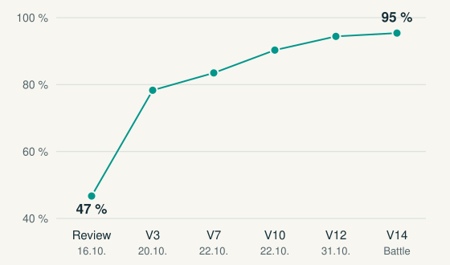
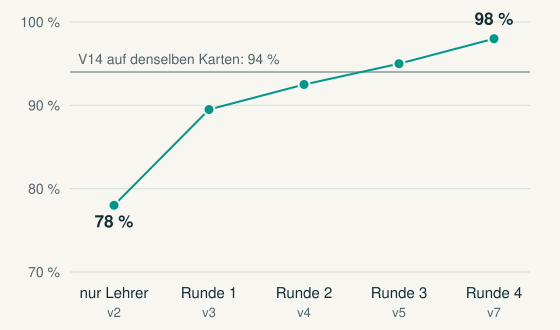
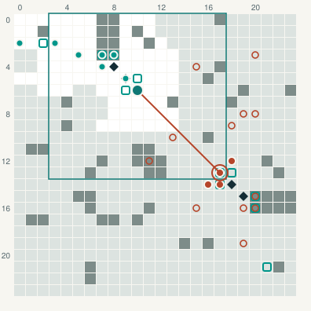
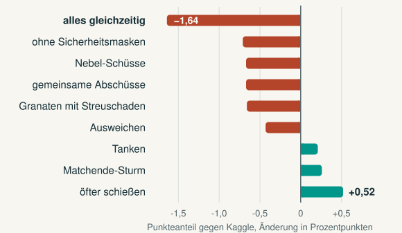

Vom Besten lernen: Wie Sherlock
vom Kaggle-Dritten kämpfen lernte
Lux AI Season 3 · Agent von Team 15
Mahmoud El-Hassan · Moayed Shawesh
HTW Berlin · Anwendungen der KI · 27. November 2026
Wir besetzen vier verschiedene Felder.
Der Punktestand steigt um drei.
Genau eines der beiden offenen Felder bringt den dritten Punkt.
über alle Matches, aus dem Punktestand erschlossen
Die Karte ist symmetrisch: Eine Hälfte verrät die andere.
Sie wandern, Sherlock verfolgt sie.
Daraus entstehen 16 Kartenebenen für Sherlocks Netz.

DQN-Netze (erst 18, dann 36) und Regeln für Wege, Schüsse und Nebel
Spiele gewonnen · 400 Karten, beide Seiten
Im ersten Match verliert V14 im Mittel 23 Einheiten, der Kaggle-Dritte nur gut eine.
17 Handregeln und sogar ein Orakel, das alle Punktefelder kennt, brachten keinen Durchbruch.
Uns fehlte Kampfstärke, nicht Wissen.
Öffentlich unter der Apache-2.0-Lizenz. Er hat selbst aus Replays der besten Kaggle-Teams gelernt.
Nicht in unserer Abgabe. Sherlock spielt mit eigenen Netzen und eigenem Gedächtnis.
1.800 Spiele gegen sich selbst, gegen V14 und gegen Solution_92.
Für jede Einheit und jeden Zug: Sherlocks eigene Sicht und die Entscheidung des Lehrers. Rund 9 Millionen Beispiele.
Welche der sechs Aktionen wählt der Lehrer, und auf welches Feld schießt er? Je sicherer das Netz richtig liegt, desto kleiner der Fehler (Kreuzentropie).
Das Netz sieht nur, was Sherlock sieht. Was der Lehrer intern weiß, bleibt ihm verborgen.
Mit reinen Lehrerspielen gerät das Netz in Lagen, die der Lehrer nie erlebt hat. Dann bleibt es oft einfach stehen.
6 Runden mit 3.400 Spielen · insgesamt 19 Mio. Entscheidungen

Runden 5 und 6 brachten kaum noch Zuwachs. Die Karten dienten auch zur Auswahl, die Werte sind daher etwas zu günstig.
16 Kartenebenen (24 × 24) · je Einheit 79 Merkmale und ihre letzte Bewegung
erkennt Muster auf der ganzen Karte und liest den Wert an der Position jeder Einheit
Wahrscheinlichkeit für jede der 6 Aktionen
Bewertung jedes Feldes als Schussziel
Zwei solche Netze stimmen ab: v9 (6 Blöcke, 0,7 Mio. Parameter) und v8L (8 Blöcke, 1,8 Mio.).

ein Punktefeld neben dem gegnerischen Relikt, das Sherlock schon kennt.
ein direkter Treffer, drei durch Streuschaden.
10 Spiele gegen den Kaggle-Dritten: 286 von 1.438 Schüssen gingen auf Felder ohne sichtbaren Gegner. 82 % davon trafen.
Stehen abwerten und gestapelte Einheiten verteilen: gegen Solution_92 von 49,5 % auf 78 % (erstes Netz, Entwicklungskarten)
Halter-Regel: Für den Halter eines bekannten Punktefelds entfällt der Abzug fürs Stehen.
Einheit 2 auf einem Punktefeld (Karte 4247, Match 1, Zug 53)
| stehen | rechts | |
|---|---|---|
| ohne Halter-Regel | 41 % | 59 % |
| mit Halter-Regel | 65 % | 34 % |
Halter-Regel mit milderer Stehstrafe, frische Karten: +1,6 Prozentpunkte Punkteanteil gegen Kaggle

„Öfter schießen“ fiel in der frischen Bestätigung durch (+0,13). Alles gleichzeitig: nur 7 statt 24 Siege von 400 gegen Kaggle.
200 direkte Duelle mit unserer vorigen Finalversion R3. Sie ergänzte V14 um einen nachgeahmten Bewegungsberater.
| Gewonnen | R3 | V16 |
|---|---|---|
| Spiele gegen Solution_92 | 787 / 800 | 787 / 800 |
| Spiele gegen Kaggle | 10 / 800 | 20 / 800 |
| Matches gegen Kaggle | 76 / 2.400 | 216 / 2.400 |
| Punkteanteil gegen Kaggle | 33,4 % | 39,3 % |
| Je Match | R3 | V16 |
|---|---|---|
| eigene verlorene Einheiten | 24 | 17 |
| verlorene Kaggle-Einheiten | 3 | 8 |
| direkte Treffer | 7 | 22 |
| Punkte von Kaggle | 377 | 303 |
Kaggle = der Kaggle-Dritte. Links: vorab festgelegte Regel, Karten 7261000–7261399, gepaart nach Karte ausgewertet. Rechts: 180 Matches je Agent auf 30 Analysekarten, Schritt für Schritt mit den Spielregeln nachgerechnet. Gegen fünf weitere Spielweisen gewann das Netz jeweils 50 von 50 Spielen.
Gedächtnis, ein starker Lehrer und DAgger brachten mehr als alle Handregeln zusammen.
Jede neue Version musste eine vorab festgelegte Prüfung auf neuen Karten bestehen. Auch nach V16 fielen dort über 20 weitere Ideen durch.
Gegen ihn holt Sherlock rund 40 % der Punkte und etwa jedes zehnte Match.
Danke! Habt ihr Fragen?
| Trainingsspiele (272 DQN-Läufe, 7 PPO-Läufe) | 662.504 |
| Zwischenprüfungen im Training | 66.912 |
| Bewertungsspiele bis 17.11. | 806.616 |
| Spiele für die Nachahmung | 5.928 |
| Prüfspiele nach V16 (Folie R5) | 9.176 |
| zusammen, mindestens | 1.551.136 |
| verschiedene Karten in Bewertungen bis 17.11. | 33.005 |
| Abgabestände seit dem 10.10. | 11 |
| Netze in V16 · Parameter | 2 · 2,5 Mio. |
| Abgabedatei · Zeit je Zug (Median) | 9,5 MB · 5–6 ms |
| Tests im Projekt | 3.298 |
| Commits (Moayed / Mahmoud) | 652 / 455 |
| Gegnertypen in Tests | über 25 |
Bis 17.11. nachgezählt mit experiments/analysis/count_games.py, Prüfspiele nach V16 aus den Ergebnisberichten, Commits Stand 24.11. Gegner: Solution_92 und drei Varianten, default, das DQN der Vorlage, Rush-Bot, Zufall, CNN-PPO, 16 eigene frühere Stände und der Kaggle-Dritte.
| Daten | 1.800 Lehrerspiele, dazu 6 DAgger-Runden mit 3.400 Spielen (Gegner Kaggle, V14, Solution_92) |
| Beispiele | 19,0 Mio. Einheitsentscheidungen, 18,7 Mio. davon im Spiel ausführbar; Validierung getrennt nach Spiel |
| Verlust | Kreuzentropie der Aktion + 0,5 × Kreuzentropie des Schussziels |
| Optimierung | AdamW, OneCycle-Lernrate, Minibatch etwa 2.048 Entscheidungen, Apple-GPU |
| v9 | 64 Kanäle, 6 Residual-Blöcke, 0,70 Mio. Parameter; 2 Epochen zu je 17,5 Minuten als Fortsetzung von v8 |
| v8L | 96 Kanäle, 8 Residual-Blöcke, 1,81 Mio. Parameter; von Grund auf trainiert, dann eine Epoche fortgesetzt |
| Nachahmung, frische Spiele | gleiche Aktion wie der Lehrer: 87 % in Lehrerspielen, 82 % in eigenen Spielen · Lehrerschuss erkannt: 50 % bzw. 36 % |
Eingaben in Training und Spiel stammen aus derselben Funktion. Der Lehrer läuft nur beim Sammeln der Daten, nie in der Abgabe.
| Aktion | Q-Wert | Auswahl |
|---|---|---|
| Stehen | 10,07 | erlaubt |
| Hoch | 9,37 | erlaubt |
| Rechts | 11,08 | gespielt |
| Runter | 11,46 | Asteroid |
| Links | 9,51 | erlaubt |
| Schuss | 8,21 | erlaubt |
Jedes der 36 Netze schätzt, wie viel Belohnung eine Aktion langfristig bringt.
Belohnung für gehaltene und neu entdeckte Punktefelder, Abzug für verlorene Einheiten, Bonus am Matchende.
66.000 Spiele für die Grundnetze, je 5.500 Spiele Nachtraining.
| Prüfung | Solution_92 (V16 / R3) | Kaggle-Spiele | Kaggle-Matches | Punkteanteil, Δ zu R3 |
|---|---|---|---|---|
| Bestätigung 2 (gleiches Netz, Stay-Bias 1,5) | 789 / 787 von 800 | 28 / 16 | 236 / 90 | +4,02 [+3,10; +4,92] |
| Bestätigung 3 (Abgabe) | 787 / 787 von 800 | 20 / 10 | 216 / 76 | +5,51 [+4,66; +6,34] |
| Dev G | 395 / 393 von 400 | 10 / 6 | 100 / 34 | +5,02 [+3,92; +6,12] |
| Bestätigung 5 (zur Information) | 778 / 789 von 800 | 34 / 18 | 238 / 98 | +4,49 [+3,66; +5,34] |
Jede Karte von beiden Seiten, Regel vor dem ersten Spiel festgelegt, gepaart nach Karte ausgewertet (10.000 Ziehungen, 95-%-Intervall). Robustheit: gegen default, Zufall, Rush-Bot, eine Solution-Variante und das DQN der Vorlage je 50/50, gegen V14 48/50.
| Idee, jeweils auf neuen Karten mit beiden Startseiten | Karten | Solution_92 · neu / V16 | Kaggle · neu / V16 | direkt gegen V16 |
|---|---|---|---|---|
| Kundschafter sucht bei kurzer Sicht das erste Relikt | 160 | 319 / 316 von 320 | – | 161 / 320 |
| derselbe, Wiederholung nur bei Sichtweite 1 | 96 | 178 / 177 von 192 | – | 102 / 192 |
| zweites Relikt auf ein Punktesignal hin suchen | 200 | 396 / 393 von 400 | – | 50 / 100 |
| ein beratener Zug in Match 2 | 120 | 238 / 237 von 240 | 8 / 8 von 240 | 38 / 80 |
| Signal-Suche und Match-2-Zug zusammen | 80 | 157 / 157 von 160 | 6 / 4 von 160 | 38 / 80 |
| gelernter Zug am Matchende | 120 | 237 / 237 von 240 | 4 / 8 von 240 | 43 / 80 |
| gelernte Erkundung am Anfang | 120 | 236 / 235 von 240 | 10 / 8 von 240 | 37 / 80 |
| Aktionsausgabe des kleinen Netzes v9 nachtrainiert | 200 | 390 / 394 von 400 | 16 / 14 von 400 | 42 / 100 |
| erschöpften Halter auf dem Punktefeld ablösen | 120 | 232 / 234 von 240 | 4 / 8 von 240 | 106 / 240 |
Zusammen 9.176 ganze Spiele auf 1.216 neuen Karten, jede Regel vor dem ersten Spiel festgelegt; weitere kleine Versuche schieden schon in der Auswahl aus. Wo V16 gegen Solution_92 noch verliert: Alle 35 Niederlagen aus 1.600 Spielen endeten 1:2, 27-mal nach gewonnenem ersten Match. In den untersuchten verlorenen Matches 2 und 3 holte Solution_92 an den später erscheinenden Relikten jedes Mal mehr Punkte (18 von 18).